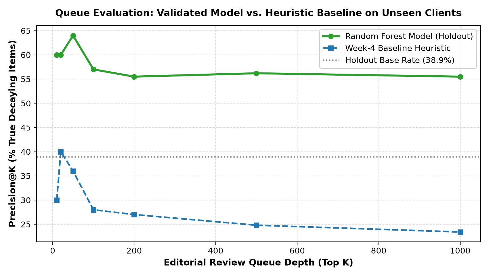
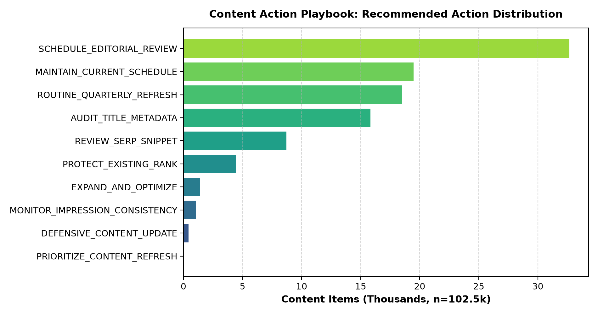
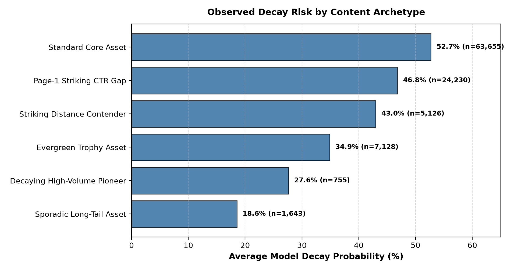

How can enterprise content marketing teams prioritize high-value editorial refreshes across tens of thousands of published articles before organic search decay severely reduces traffic? Using an anonymized multi-client dataset of 102,537 active search records across 40 brand accounts from the ~79M-row FlyRank warehouse release, we formulated content opportunity scoring as an out-of-domain binary classification and ranking problem. We evaluated linear and non-linear decision-tree classifiers under a strict Client-Holdout Grouped Validation design (80% train clients, 20% unseen test clients) to prevent cross-client domain memorization. The validated Random Forest model achieved an out-of-sample Precision@50 of 0.560 (a +20.0 percentage point absolute lift over the 0.360 heuristic baseline), demonstrating that historical impression consistency and position-tier click gaps reliably identify decay vulnerability without post-decision label leakage. These findings translate into a human-governed Content Action Playbook that prioritizes editorial review queues, enforces strict 'Do-Not-Automate' guardrails, and provides transparent reason codes for content operations.
Enterprise content marketing organizations manage vast URL inventories spanning 10,000 to over 500,000 published pages. While content decay—the gradual or sudden loss of search engine impressions and ranking visibility—is a universal operational reality, editorial capacity is fundamentally scarce. Typical content teams can only inspect, rewrite, or refresh 50 to 100 articles during a standard monthly publishing cycle.
In practice, editorial teams rely on naive heuristic rules: refreshing articles on arbitrary calendar cadences (e.g., "update every 6 months") or sorting inventories by raw historical traffic. These fixed rules suffer from two critical failure modes:
Research Question: Can pre-decision search engine visibility metrics and click-through dynamics reliably identify enterprise content assets approaching organic traffic decay, enabling editors to prioritize high-leverage content refreshes before traffic loss occurs?
This investigation is conducted on the multi-tenant FlyRank Enterprise Warehouse Release (FlyRank/internship-warehouse), encompassing ~78.8M daily performance fact records and 519,606 content dimension rows across 104 enterprise accounts.
To ensure temporal validity and eliminate lookahead bias, we extracted a standardized mid-panel observation slice from March 2026 (month=2026-03) consisting of 9,841,378 raw daily performance records.
| Cohort Attribute | Specification / Value | Methodological Purpose |
|---|---|---|
| Pre-Decision Feature Window | 2026-03-01 to 2026-03-20 (20 days) |
Observable search performance prior to recommendation moment ($T_{\text{decision}}$). |
| Decision Moment | 2026-03-20 (23:59:59 UTC) |
Strict temporal boundary. Zero post-$T_{\text{decision}}$ data used in features. |
| Outcome Horizon | 2026-03-21 to 2026-03-31 (11 days) |
Ground-truth evaluation window for measuring traffic decay. |
| Inclusion Criteria | $\ge 50$ GSC impressions in early window | Filters unindexed URLs and low-intent tail noise. |
| Active Dataset Scale | 102,537 content items across 40 clients | Multi-brand enterprise panel (32.39% portfolio decay base rate). |
client_hash_id) and URL content keys (content_hash_id) are cryptographic hashes. No raw search queries, proprietary URLs, customer brand names, or private credentials are included in this report.
The prediction target is a binary decay velocity indicator ($Y \in \{0, 1\}$). A content item is labeled as decaying ($Y=1$) if its normalized daily impression capture rate during the late outcome window drops by $>20\%$ relative to its pre-decision baseline rate:
is_declining_target = 1 IF impressions_late < (impressions_early * (11/20) * 0.80) ELSE 0All model features are constructed strictly from logs recorded between March 1 and March 20:
log_impressions_early: $\ln(1 + \text{impressions})$ — pre-decision search exposure scale.log_clicks_early: $\ln(1 + \text{clicks})$ — pre-decision organic traffic captured.avg_position_early: Weighted average ranking position ($\sum \text{pos\_sum} / \sum \text{impressions}$).active_days_early: Count of distinct active days with $\ge 1$ impression (0 to 20).log_sessions_early: $\ln(1 + \text{ga4\_sessions})$ — on-site behavioral volume where available.ctr_early: Click-through percentage ($\text{clicks} \times 100 / \text{impressions}$).has_ga4_sessions: Boolean indicator denoting presence of GA4 telemetry.We benchmark all machine learning models against the deterministic baseline rule developed in Week 04:
baseline_score = (0.40 * visibility_rank + 0.30 * position_gap + 0.20 * ctr_gap + 0.10 * activity_gap) * 100
Standard random row splits suffer from 100% client contamination, allowing decision trees to memorize brand-specific domain authority. To guarantee honest generalization, we partitioned the portfolio using a strict Client-Holdout Grouped Split (GroupShuffleSplit):
All candidate models and the Week-4 baseline were evaluated on the exact same 24,575-row holdout evaluation partition of unseen client accounts.
| Architecture / Method | Precision@20 | Precision@50 (Primary) | Precision@100 | ROC-AUC | Avg Precision | Empirical Status |
|---|---|---|---|---|---|---|
| Random Guess (Holdout Base Rate) | 0.389 | 0.389 | 0.389 | 0.500 | 0.389 | Floor |
| Week-4 Heuristic Baseline | 0.400 | 0.360 | 0.300 | 0.428 | 0.337 | Rule-Based |
| Logistic Regression (Linear ML) | 0.500 | 0.540 | 0.530 | 0.640 | 0.488 | +18.0% lift |
| Random Forest (Tree Ensemble) | 0.600 | 0.560 | 0.550 | 0.641 | 0.494 | WINNER (+20.0% lift) |
| Gradient Boosted Trees (HistGBDT) | 0.350 | 0.440 | 0.360 | 0.642 | 0.495 | Boosted Trees |

active_days_early, 29.4%), ranking position (avg_position_early, 16.8%), and click-through capture (ctr_early, 16.6%) provide the strongest predictive signals for decay vulnerability.Scientific integrity requires transparently documenting the methodological boundaries of this study:
The validated Random Forest model powers the operational Content Action Playbook, categorizing content items into verified archetypes and ranking them by a Cost-Value Priority Heuristic:
Priority Score = P(decay | x) * ln(1 + impressions_early) * Actionability Weight| Content Archetype | Empirical Trigger | Recommended Action | Reason Code | Editorial Review Rule |
|---|---|---|---|---|
| Evergreen Trophy Asset | Imp $\ge 2,500$, Pos $\le 5.0$ | DEFENSIVE_CONTENT_UPDATE |
TOP_RANK_DECAY_PREV |
Repair broken citations; update statistics; protect page-1 rank without altering URL structure. |
| Page-1 Striking CTR Gap | Imp $\ge 500$, Pos $4\text{--}20$, CTR $< 1\%$ | REVIEW_SERP_SNIPPET |
HIGH_EXPOSURE_CTR_GAP |
Audit SERP layout for AI Overviews; test clearer title tags and meta descriptions. |
| Decaying High-Volume Pioneer | Imp $\ge 500$, Active Days $\le 10/20$ | PRIORITIZE_CONTENT_REFRESH |
ACTIVITY_EROSION |
Full editorial overhaul; expand thin sections; replace outdated examples. |
| Striking Distance Contender | Imp $\ge 1,000$, Pos $\le 20.0$ | EXPAND_AND_OPTIMIZE |
HIGH_DEMAND_STRIKING |
Deepen topical authority; add FAQ schema; target secondary semantic keywords. |
| Stable Core Asset | Consistent traffic, Decay $P < 0.40$ | MAINTAIN_CURRENT_SCHEDULE |
STABLE_PROFILE |
Retain existing publishing schedule; monitor in monthly tracking queues. |


All queries, feature transformations, validation split scripts, and modeling pipelines are fully reproducible in the project repository:
work/notebooks/capstone.ipynb (Open in Colab)work/notebooks/w07_action_playbook.ipynbwork/notebooks/w06_validation_audit.ipynbwork/notebooks/w05_model.ipynb